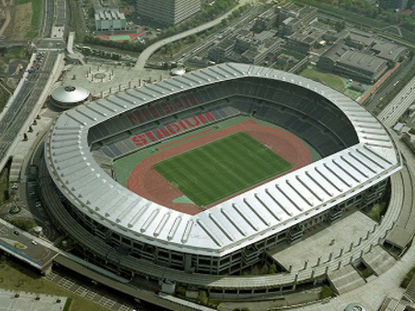
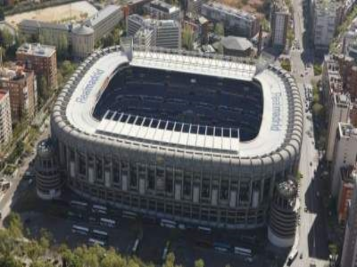
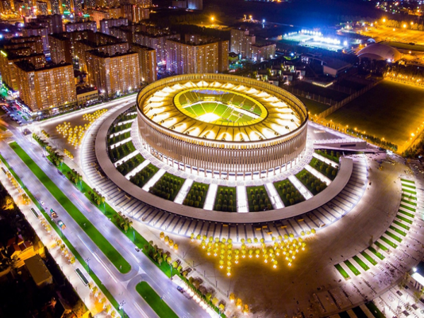
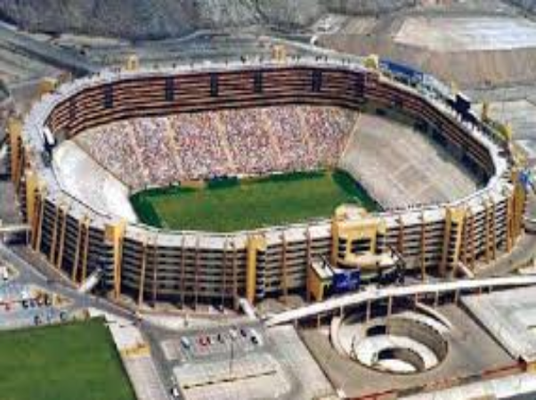
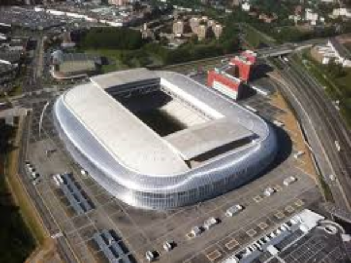
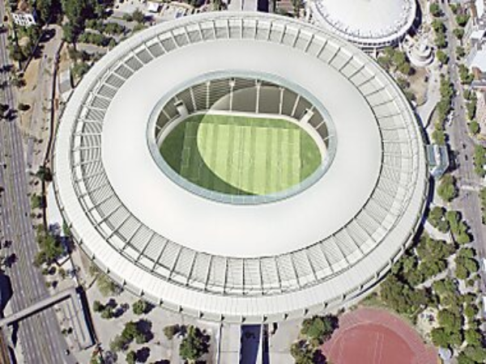
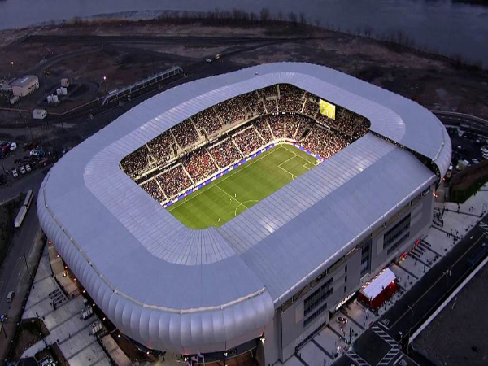
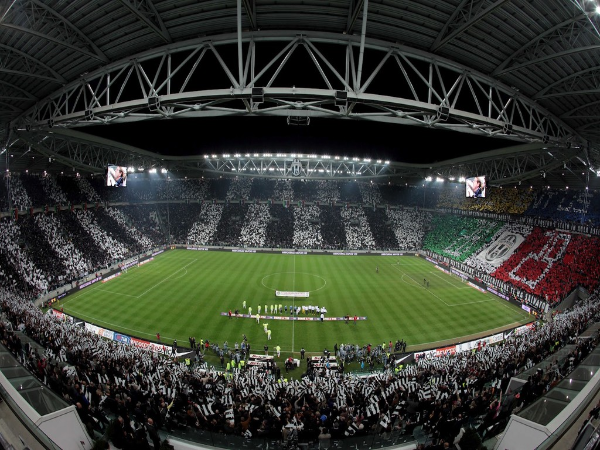
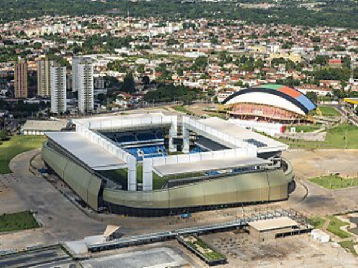
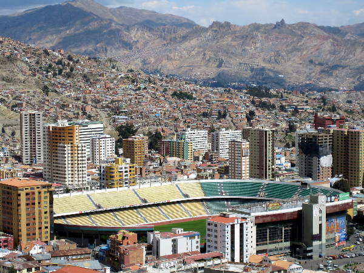

Nissan Stadium, Japan
Baku Crystal Hall, Azerbaijan

Cape Town Stadium, South Africa

Konya Buyuksehir Stadion, Turkey

Lords Cricket Ground, England

Stade Yves-du-Manoir, France
 The Mestella Stadium, Spain
The Mestella Stadium, Spain PGE Narodowy, Poland
PGE Narodowy, Poland
Optus Stadium, Australia

Antwerps Sportpaleis, Belgium

Bursa Timsah Arena, Turkey

Wembley Stadium, England

Zenith Arena Lille, France

Santiago Bernabéu Stadium, Spain
Krasnodar Academy Stadium, Russia
Estadio Monumental, Argentina
Stade Pierre-Mauroy, France
Armin-Wolf Arena, Germany

Maracanã, Brazil
Red Bull Arena, USA
The o2 Arena, England

Allianz Stadium, Italy
Arena Pantanal, Brazil
Hernando Siles Stadium, Bolivia
